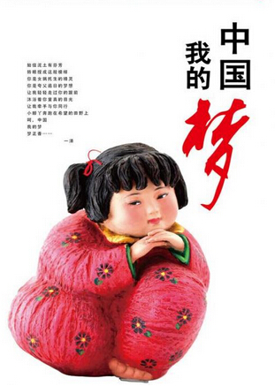

返回主页
中国梦娃

有些族裔更平等？
梦娃醒，太阳笑，中国梦，多美妙。国是家、善作魂、勤为本、俭养德、诚立身、孝当先、和为贵。百年梦，时代潮，齐努力，同奔跑。共祝愿，祖国好。合美、吉祥、节节高。
中国梦，是中国共产党第十八次全国代表大会召开以来，习近平总书记所提出的重要指导思想和重要执政理念，正式提出于2012年11月29日。习总书记把“中国梦”定义为“实现中华民族伟大复兴，就是中华民族近代以来最伟大梦想”，并且表示这个梦“一定能实现”。
“中国梦”的核心目标也可以概括为“两个一百年”的目标，也就是：到2021年中国共产党成立100周年和2049年中华人民共和国成立100周年时，逐步并最终顺利实现中华民族的伟大复兴，具体表现是国家富强、民族振兴、人民幸福，实现途径是走中国特色的社会主义道路、坚持中国特色社会主义理论体系、弘扬民族精神、凝聚中国力量，实施手段是政治、经济、文化、社会、生态文明五位一体建设。
或者，你喜欢另外一种孩子。他们是有着“航海”企图的孩子。
version:1.0; jobnet@188.com © retter2012.com